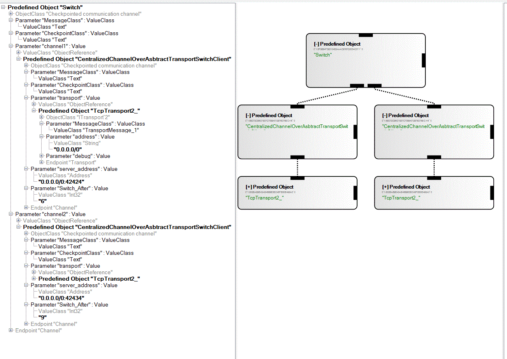

Live Distributed Objects
Checkpointed Switch Component
The switch component serves as a connection between two different networks. It is responsible for relaying messages from one network to the other network. It does switching between the networks based on some dynamically collected information. As of now the switching stategy is very naive and is based on the number of messages arrived at the switch from a network. This value (switch after how many messages) is passed as a parameter to the CentralizedChannelOverAbstractTransportSwitchClient component.
The Switch component is connected to two checkpointed channels for both the networks. The checkpointed communication channel component is CentralizedChannelOverAbstractTransportSwitchClient. CentralizedChannelOverAbstractTransportSwitchClient uses simple transport like TcpTransport2_ to connect to a server in the respective networks. The switch component maintains the latest checkpoint received from either channels and relays the respective checkpoint when the corresponding server requests for the checkpoint from it.
Example
Figure shows the Switch component connected to two CentralizedChannelOverAbstractTransportSwitchClient which in turn are connected to TcpTransport2_. The two CentralizedChannelOverAbstractTransportSwitchClient connect to servers listening on port 42424 and 42434 respectively. The Switch_After parameter in CentralizedChannelOverAbstractTransportSwitchClient is set to 6 and 9 respectively.

Basic Steps to run
- Start single instance of CentalizedChannelOverAbstractTransportServer_2_42424.liveobject and CentalizedChannelOverAbstractTransportServer_2_42434.liveobject. These are the two servers which will form their own network.
- Start multiple instances of CentalizedChannelOverAbstractTransportClient_2_42424.liveobjects and CentalizedChannelOverAbstractTransportClient_2_42434.liveobjects. They are the clients in respective networks.
- Start the Switch component to connect the two networks. The Switch component receives the latest checkpoint from the respective servers.
- Messages sent by clients in one network will be relayed to the clients in the other network through the switch.
- Switch message is sent by CentralizedChannelOverAbstractTransportSwitchClient when it receive 6 messages from server on port 42424. No messages are forward on the channel from which the switch message was received. Messages sent by server on port 42434 will be queued by the swicth component and will be sent to server on port 42424 when switch message come from CentralizedChannelOverAbstractTransportSwitchClient connected to server 42434 (this will happen when 9 messages have been received by CentralizedChannelOverAbstractTransportSwitchClient connected to server on port 42434).
- Close all the instances of the client.
- Open new clients. The checkpointed state will be relayed to the new clients. This state is obtained from the checkpoint stored at switch component for respective networks.
Future extension:
The Switch component code can be extended to switch the messages based on some dynamically collected parameters like the workload, the number of clients, the message rate, the observed latencies, or other such parameters.